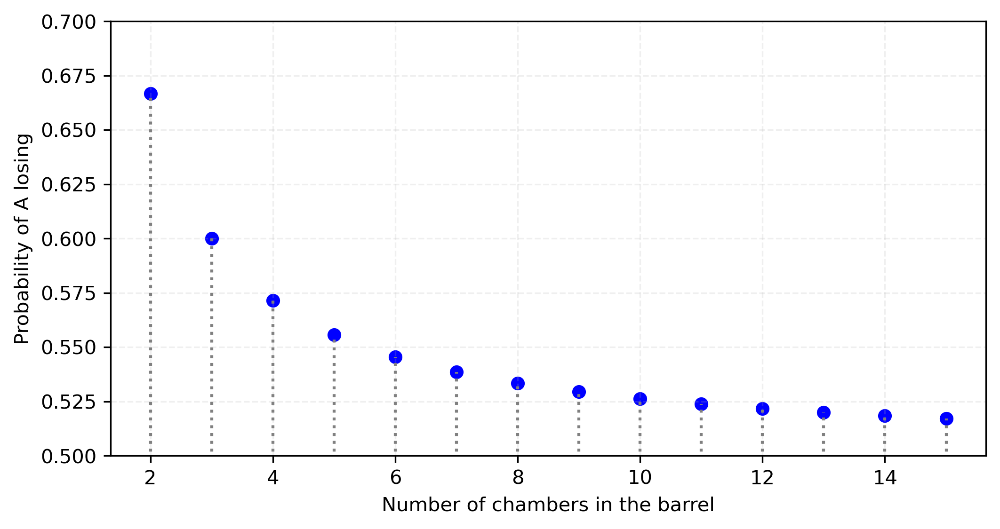
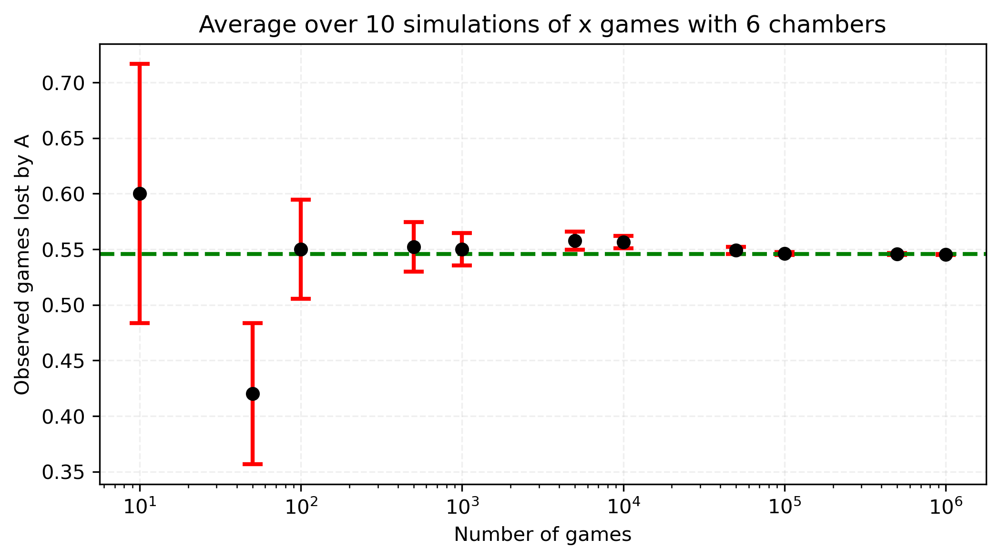

January 24th, 2025.
It's been a while since I write here! Although busy with other things, I do miss typing these little blog entries. Not too long ago I was thinking about probability. From basic problems all the way to applications in real-world physics research.
Because of my lack of formal studies in probability, I was quite astonished after doing some thinking in the problem of Russian roulette games. In this blog post I want to discuss one version of it, and test the theory with simulations. In typing this blog I hope to understand, beyond mathematical manipulations, the equation governing the game.
Let's consider two players. Let's call them $\mathcal{A} $ and $\mathcal{B} $. Suppose player $\mathcal{A} $ goes first (and continuous doing so), and consider a game where
What is the probability (call it $q $) that $\mathcal{A} $ losses? Spoiler alert: It is greater than $50\% $. It is in fact this number that led to write this blog entry. It feels right but at the same time it doesn't. Perhaps it is just one of those matters your think over and over and at some point you understand it (or you think you do and feel happy doing so).
The most basic game would consist of $\mathcal{A} $ shooting himself on the first round. The chances of this happening are $1/n $.
Suppose $\mathcal{A} $ happens to survive the first round. It is $\mathcal{B} $'s turn now. They spin the gun, prepare to shoot, and boom... player $\mathcal{B} $ survived! This can happen with a probability of $(n-1)/n $.
This can continue on and on and on. We want player $\mathcal{A} $ to lose. That is, we need player $\mathcal{B} $ to beat a round and win. $\mathcal{B} $ winning is represented by $1-q=p $. So $\mathcal{B} $ winning is given by $\frac{n-1}{n}\cdot p $. We now have all the possible cases: ``Player $\mathcal{A} $ loses on the first round, or player $\mathcal{A} $ survives but $\mathcal{B} $ wins.''
\[q=\frac{1}{n}+\frac{n-1}{n}p \]Since $p=1-q $,
\[q=\frac{1}{n}+\frac{n-1}{n}(1-q) \tag{i}\]We can now solve for $q $:
\[ \left( 1+\frac{n-1}{n} \right) q -\frac{1}{n}-\frac{n-1}{n}=0\] \begin{align*} \left( 1+\frac{n-1}{n} \right) q -\frac{1}{n}-\frac{n-1}{n} &= 0 \\ \left( 2-\frac{1}{n} \right) q -1&= 0\\ \left( \frac{2n-1}{n} \right) q &= 1\\ q &= \frac{n}{2n-1} \end{align*}The second term in Eq. (i) could also be thought as ``player $\mathcal{A} $ wins the round, but also $\mathcal{B} $ wins the game.''
Before running many games of Russian Roulette, notice that as $n\rightarrow \infty $, the probabilities even out:
That is,
\[\lim_{n\to \infty }\frac{n}{2n-1}=\frac{1}{2}\equiv 50\% \]Consider now the following:
Dots represent averages, with bars displaying standard deviation over the appropriate subrange of data. Notice first that the fewer rounds we simulate, the more uncertainty we have. Most importantly, as we increase the number of simulated games, the ratio of games lost by $\mathcal{A} $ approaches the theoretical value of (when $n=6 $) $6/11\approx 0.545455 $. This is what probability promises!
Interesting, right?